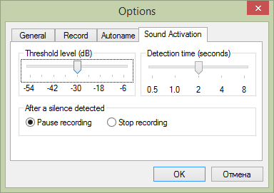

- This function can be used to skip silent passages during a long time recording. To start it, press the Sound Activation button:
- To change the voice activation parameters open the program preferences dialog by the menu:
- Tools
 Options...
Options... - 
If a recording sounds are lower than the Threshold level for a Duration time seconds, then the program will pause recording until it detects any high sounds.
You can configure the threshold level while adjusting a sound volume before recording. Then the voice activation is turned on, it displays a dark-green bars on the logarithmic (dB) peak meter.